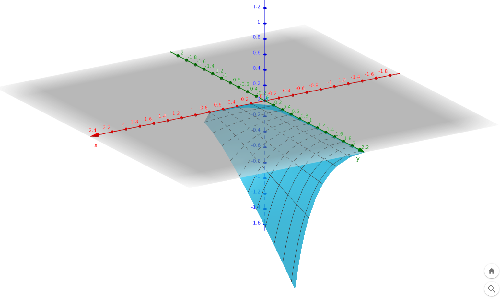

Disclaimer
This is an In Progress post. It is incomplete and of poorer
quality than my other posts. It’s an experiment in encouraging me to
publish more often.
Introduction
The other day, while I was playing around with Uniswap V2 maths, I
dreamt up a possible attack. The idea was simple.
- Swap token Y for token X
- Add a ship-load of liquidity
- Swap then Xs from step 1 back to token Y
- Withdraw the liquidity from step 2
The idea behind this strategy was that the slippage in step 3 would
be much smaller than step 1 because of the added liquidity. Could this
asymmetry yield an advantage?
I just didn’t know.
It seemed clear that I’d make a profit on step 3 vs step 1, but this
needed to be offset against the additional asymmetry in steps 2 and 4.
When you withdraw the liquidity in step 4 you get back a different mix
of token X and Y than you put into the pool in step 2.
Maybe these two things would cancel each other out or even cause a
net loss. Or perhaps, depending on the quantities involved, you
sometimes got a profit and sometimes a loss. I needed to investigate
this more closely.
To be clear upfront, I didn’t actually think this attack was going
work. Uniswap V2 has been around for too long for someone — were it real
— not to accidentally notice it.
Spoiler alert: the attack doesn’t work so you can stop reading now if
you’re not interested in attacks that don’t work. But if you’re
interested in seeing why, we’ll prove it with the help of a little
algebra.
Defining our variables
In this and following sections I’ll using notation similar to that
found in the book Automated
Market Makers: A Practical Guide to Decentralized Exchanges and
Cryptocurrency Trading. However, you can find similar presentations
in many places on the web.
- Let
A
and
B
represent the quantities of token X and token Y, respectively, in the
pool. We will use subscripts
e.g. A0,
A1,
etc to show how these quantities evolve over time.
- Let
a
and
b
represent the amount of token X swapped/received and token Y
received/swapped.
- Let
k
be the percentage of token X that we initially buy using token Y.
0<k<1
- Let
f
be the percentage of the current liquidity that we add to the pool.
f=1
means that we add 100% of the current liquidity into the pool.
0<f
We will now derive an equation that depends only on the variables
k
and
f.
Deriving the algebra
Let’s get started.
Uniswap V2 is a constant product AMM which means it obeys
the constant product rule. Thus, if we swap
k
percent of the initial balance of token X,
A0.
From the pool’s perspective we have:
(A0−kA0)(B0+b0)(1−k)(A0B0+A0b0)A0b0A0b0b0=A0B0=A0B0=1−kA0B0−A0B0=1−kA0B0−A0B0+kA0B0=1−kkA0B0=1−kkB0(0)
Thus we paid
k−1kB0
in token Y.
Now we calculate the new token quantities in the pool
A1B1=(1−k)A0=B0+1−kkB0=(1−k1−k+1−kk)B0=1−k1B0(1)(2)
We now begin step 2, adding
f
times the existing liquidity to the pool. To simplify things we
denominate the value of the pool in terms of token Y. We also assume
that the market price of the tokens does not change during this
process.
poolValue=A0B0A1+B1=A0B0(1−k)A0+1−k1B0=(1−k)B0+1−k1B0=1−k(1−k)2+1B0(by (1) and (2))
Thus the cost of adding
f
times this liquidity is
cost=1−kf(1−k)2+fB0(3)
The pool now has more liquidity. Using equations
(1)
and
(2)
we have:
A2B2=(1+f)A1=(1+f)B1=1−k1+fB0=(1+f)(1−k)A0(4)(5)
We now enter step 3 of the process and sell the tokens we received in
step 1. That is, we sell
kA0
of token X. Using the constant product rule again we get:
b2=A2+kA0kA0B2(1+f)(1−k)A0+kA0=1−kk(1+f)A0B0=1−kk⋅((1+f−fk−k)+k)A0(1+f)A0B0=(1−k)(1+f−fk)k(1+f)B0(by (4) and (5))(6)
The new quantities in the pool are now:
A3B3=A2+kA0=(1+f)(1−k)A0+kA0=(1+f−fk)A0=B2−b2=1−k1+fB0−(1−k)(1+f−fk)k(1+f)B0=1−k1+f(1−(1+f−fk)k)B0=1−k1+f⋅1+f−fk1+f−fk−kB0=1−k1+f⋅1+f−fk(1−k)(1+f)B0=1+f−fk(1+f)2B0(7)(by (5))(8)
Now we perform step 4 and withdraw our liquidity which is
1+ff
of the total liquidity. What is the return?
return=1+ffA0B0A3+B3=1+ff(A0B0(1+f−fk)A0+1+f−fk(1+f)2B0)=(1+ff(1+f−fk)+1+f−fkf(1+f))B0=(1+f)(1+f−fk)f(1+f−fk)2+f(1+f)2B0(by (7) and (8))(9)
Phew. We now have all the ingredients necessary to work out our
profit (or lack thereof).
First we’ll work out our return on step 3 vs step 1 which is just
b2−b0.
===b2−b0(1−k)(1+f−fk)k(1+f)B0−1−kkB01−kk1+f−fk1+f−(1+f−fk)B0(1−k)(1+f−fk)fk2B0(by (0) and (6))(10)
Now we can work out the profit.
profit=(b2−b0)+return−cost=(1−k)(1+f−fk)fk2B0+ (1+f)(1+f−fk)f(1+f−fk)2+f(1+f)2B0−1−kf(1−k)2+fB0=((1−k)(1+f−fk)fk2+(1+f)(1+f−fk)f(1+f−fk)2+f(1+f)2−1−kf(1−k)2+f)B0(by (3), (9) and (10))
Conclusion
This is pretty messy algebra and it took me forever to get it right.
I was worried that I’d missed some obvious opportunities for
simplification so I passed it through Symbolab hoping it would come with
something neater. When it didn’t I just kept it the way it was.
What’s interesting about the definition of
profit
is that it’s one giant multiple of
B0
the initial number of token Y in the pool. If this factor is greater
than zero then we have a profit!
So I typed this enormous and unwieldy equation into GeoGebra’s 3D plot (substituting
x
for
k
and
y
for
f).
I also restricted the value of
k
and
f
(x
and
y)
for which it was plotted.
It ended up looking like this in GeoGebra.
It produced the most beautiful plot.

You can view and
manipulate the plot here.
As you can see, at no point does the surface go above the
xy
plane. That is, there is no place in the range
0<k<1
and
0<f
where its value is positive. I love the way it looks like a flexible
sheet being peeled away from the
xy-plane.
This proves that you can’t make any profit using this strategy.
In fact, as
k
grows larger you make increasingly larger losses. The factor
f
seems to act as an amplifier. If
k
is fixed then the larger
f
is, the larger the loss is.
Postscript:
“Pay no attention to the man behind the curtain”
You might see all the algebra above and find it off-putting. Rest
assured, I had to work quite hard to finish the job. I made (too) many
mistakes along the way. One thing that helped me was to first do a
concrete example and then, at each stage, sanity check my algebra by
plugging in those values and seeing if they matched.
Initially I made the mistake of calculating a concrete example with
k=0.5
and
f=1.0.
Even when there were still mistakes in the algebra, this meant that my
sanity checking would show none. The reason for this was that, in this
case,
1−k=0.5
and
f∗anything=anything.
I took the time to calculate another concrete example with
k=0.3
and
f=1.2
which helped much more in sanity checking. It was very unlikely that
plugging in those values to incorrect algebraic equations would yield
the same results as my concrete example.